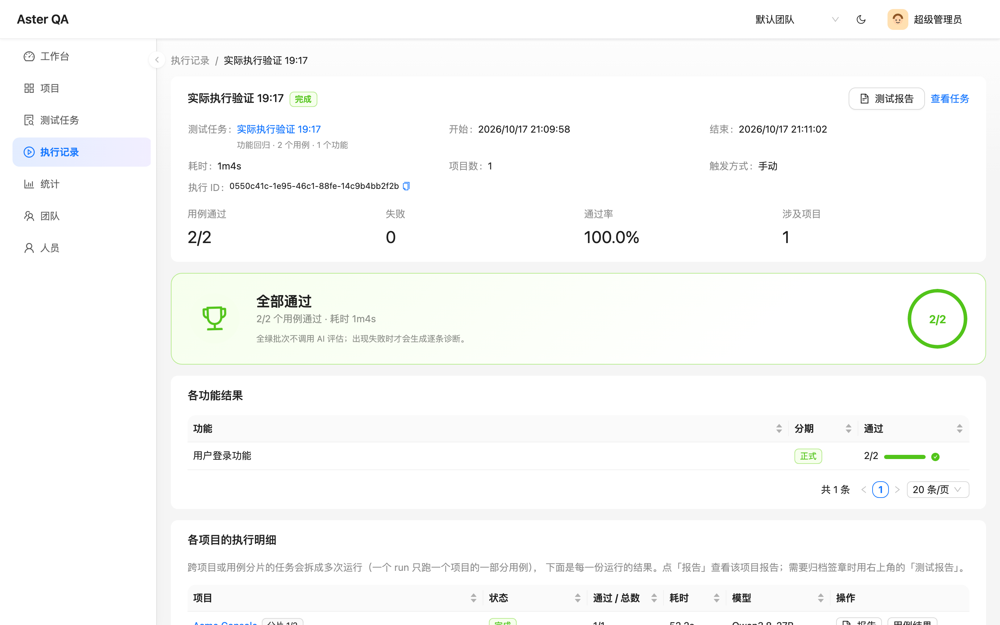
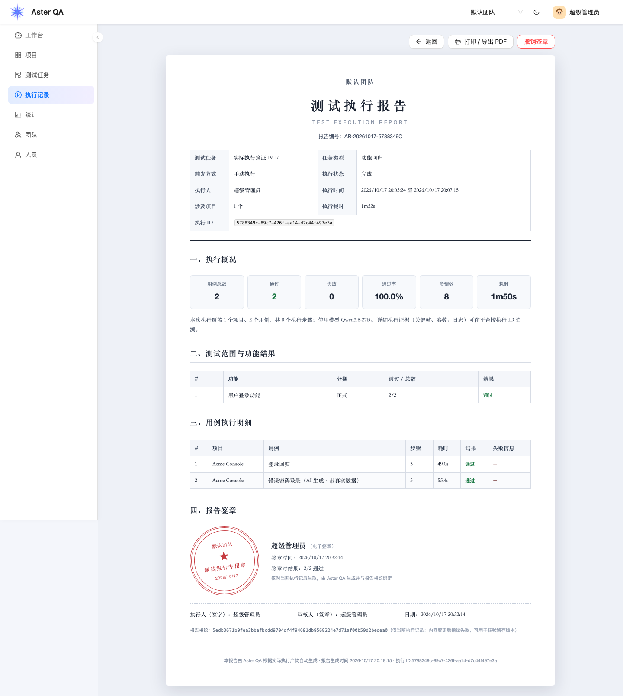

✦
AI 生成与迭代 YAML
自然语言对话产出可执行的 midscene 用例，流式输出、结构化回复；AI 自己判断每一步是否启用缓存。
ai_case · streamingAster QA 把需求、用例、执行、报告和合规签章放进同一条链路： AI 生成可执行的 midscene YAML，多项目 / 分片并行跑，执行结果按用例回放关键帧， 最后生成一份带编号、指纹和电子签章的执行报告。

从「让 AI 写一条用例」到「给一次执行盖章」，中间每一步都有明确的落点和可追溯的产物。
自然语言对话产出可执行的 midscene 用例，流式输出、结构化回复；AI 自己判断每一步是否启用缓存。
ai_case · streaming每个项目明确指定模型、接入地址和 Key；按月 token 限额，没配好模型就不允许执行。
quota · no global fallback跨项目任务自动拆 run；单项目用例按数量分片。多 worker + 全局并发上限，失败 worker 的任务可被安全恢复。
worker · sharding报告以用例为第一层，步骤带关键帧时间线、回放、截图和原始参数；不再是一份看不懂的 execution dump。
report.json · keyframes报告编号、执行范围、结果汇总、失败详情、报告指纹和电子签章；一次签章只作用于当前执行记录，可打印 / 导出 PDF。
signoff · A4 printAI 读取失败步骤和真实产物给出根因与责任归属；统计页提供通过率、Wilson 下界、flaky 榜单和趋势。
assessment · stats企业留存需要的不是截图拼接，而是一份格式固定、内容可核验、责任可追溯的文档。

建项目、功能和迭代，填被测地址和项目级模型配置。用例挂在功能下，任务引用功能的快照。
描述要测什么，AI 产出可执行 YAML；继续对话迭代，审阅后由测试人员做内容指纹签名。
点击执行，多项目 / 分片并行；在用例级报告里回放关键帧，失败由 AI 诊断，最后对本次执行记录签章归档。
需要 Docker + Docker Compose v2。首次启动会构建含 Chromium 的 worker 镜像，约 1.5GB。
详细配置、模型接入和本地开发方式见 README。
# 1. 克隆并配置 git clone https://github.com/whalezhao/aster-qa.git cd aster-qa cp .env.example .env # 编辑 .env：至少修改 POSTGRES_PASSWORD 和 SECRET_KEY # 2. 启动 docker compose up -d --build # 3. 初始化管理员 docker compose exec api python seed.py admin admin123 默认团队 # 打开 http://localhost:8080